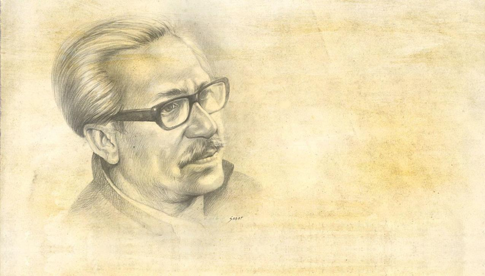

The .rounded class adds rounded corners to an image:
The .rounded-circle class shapes the image to a circle:
The .img-thumbnail class creates a thumbnail of the image:
Use the float classes to float the image to the left or to the right:
Center an image by adding the utility classes .mx-auto (margin:auto) and .d-block (display:block) to the image:
The .img-fluid class makes the image scale nicely to the parent element (resize the browser window to see the effect):